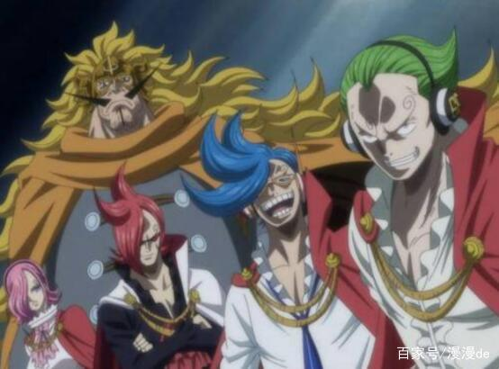

进入新世界后，面对强大的敌人，单打独斗已然行不通，要闯出一片天，结盟是一种方法，还有依靠家族力量。在《海贼王》中，有7个家族都强的可怕，堪称最强的七个家族。其中有2个家族要杀路飞，还有两个家族，看似不起眼，却都比四皇团还要强。
山治的家族很强大，也是世界政府加盟国，依靠科技的力量，培养了强大的军队，表面看着很强，但缺少顶梁柱。在山治家族中，缺少一个顶级强者，对战大妈团时，伽治、蕾玖都被打败了。即便是山治回归，遇到四皇级的对手，整个家族也打不过。
明哥的海贼团也是家族势力，成员间没有血缘关系，却十分的团结，明哥也称他们为家人。在明哥团中，干部们都很强，人数也众多，还有不少逆天果实。明哥作为老大，拥有果实觉醒，还有霸王色，至少也是大将级，还想把路飞杀掉。相对山治家族，明哥团还是要强一点。
在卡普家族中，只出场了三人，个个都是顶级强者。卡普是海军英雄，有匹敌罗杰的实力。龙也强的恐怖，统领革命军，对抗整个天龙人。路飞目前最弱，赏金已达15亿贝里。卡普家族打不过四皇团，原因在于人员太少，应了一句话：双拳难敌四手。
大妈的海贼团，主要依靠家族势力，而且多数有血缘关系。大妈家族不仅人数多，强者也不少。作为皇副，卡塔库栗赏金超10亿，差点把路飞打败。大妈本人更是强大，拥有金刚不坏的身体，还想要杀掉路飞。卡普家族的三人，应该打不过大妈全团吧。
白胡子海贼团也是一个家庭，船员之间没有血缘关系，都情同手足，也尊称白胡子为老爹。这个家族曾是最强四皇，而且有匹敌罗杰海贼团的实力。除了最强男人白胡子，各位队长都是顶级强者。尾田在SBS中说过，每一位队长实力等同，都堪比大将。
在和之国，光月家族是统治者，将军、御田都是光月家一员。关于武士的实力，曾被齐全肯定，他本人也很畏惧。就从御田的家臣来看，赤鞘九人实力非凡，阿修罗砍伤10亿杰克，小菊被路飞多次认可。如果光月家族团结起来，四皇也不是对手。
在《海贼王》中，最强的一个家族，必定是D之一族。虽然彼此间有的没有血缘关系，但这个家族联合在一起，真的可以左右世界。明哥也曾说过，隐藏在深处的D，早晚会掀起强大的风浪，也证实了D之一族是最强的。